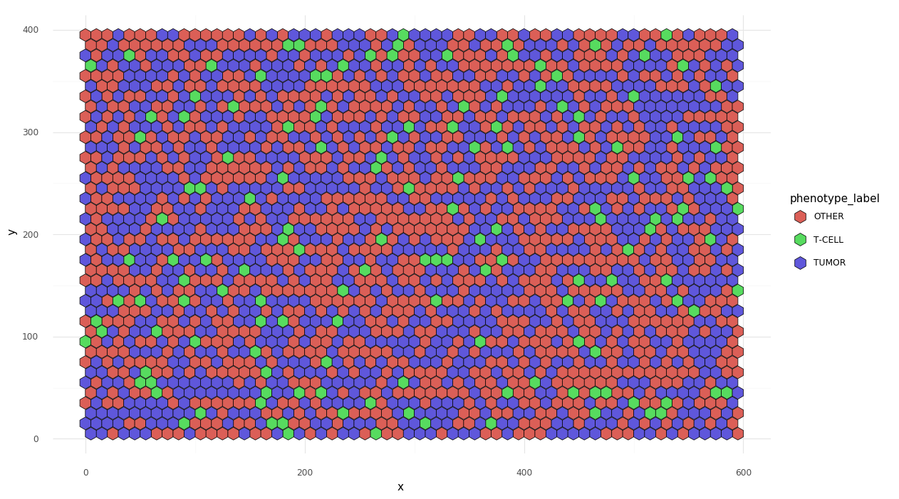

Multiplex IF Simulator¶
Readme File¶
multiplex-if-simulator¶
Simulate multiplex IF data
Read the docs: https://jason-weirather.github.io/multiplex-if-simulator/¶
Quickstart¶
Generate a small Infiltrated mIF image
from multiplexifsimulator.models.general import SlideModelInfiltrated as SMI
from multiplexifsimulator.formats.inform import FrameEmitterInForm
from plotnine import *
import matplotlib.pyplot as plt
## Set your image size
shape = (100,150)
## Set the cell coordinates and phenotypes with a model
model = SMI(shape)
## Initialize the emitter
fe = FrameEmitterInForm(shape)
fe.set_cell_coordinates(model.cells)
## Generate the base images in numpy array format
cell_image, edge_image, processed_image = fe.make_cell_image()
## Show the images
(ggplot(model.cells,aes(x='x',y='y',fill='phenotype_label'))
+ geom_point(shape='h',size=5,stroke=0.3)
+ theme_minimal()
+ theme(figure_size=(4.5,4),aspect_ratio=shape[0]/shape[1])
+ xlim(0,shape[1])
+ ylim(0,shape[0])
).draw()
plt.show()
plt.imshow(cell_image,origin='lower')
plt.show()
plt.imshow(edge_image,origin='lower')
plt.show()
plt.imshow(processed_image,origin='lower')
plt.show()


### Generate a binary_seg_map.tif based on a cell seg data file
```python
import matplotlib.pyplot as plt
from multiplexifsimulator.formats.inform import FrameEmitterInForm
# Read in a cell seg file
fname = 'input/MEL3_120116_2_cell_seg_data.txt'
seg = pd.read_csv(fname,sep="\t")
# Create an image emiter that will expand cells a maximum of 17 pixels
# in each direction and will expand the processed border a further
# 20 pixels
fe = FrameEmitterInForm(shape=(1040, 1392),cell_steps=17,boundary_steps=20)
# Set the cell coordinates
fe.set_cell_coordinates(seg[['Cell X Position',
'Cell Y Position',
'Cell ID']].rename(
columns={'Cell X Position':'x',
'Cell Y Position':'y',
'Cell ID':'id'}))
# Produce numpy arrays
nuc, mem, proc = fe.make_cell_image()
# Display images
plt.imshow(nuc)
plt.show()
plt.imshow(mem)
plt.show()
plt.imshow(proc)
plt.show()
# Save the combined tif
fe.save_binary_seg_maps('output/MEL3_120116_2_binary_seg_maps.tif')
Modules¶
-
class
multiplexifsimulator.FrameEmitter(*args, **kwargs)[source]¶ Generic class for generating a mIF dataset
- Common properties:
- shape (tuple) - the size of the image integers (y,x)
- cell_steps (int) - how many pixels to try to fill out in the process of defining a cell
- boundary_steps (int) - how many pixels farther than the image to fill out to define the active region
-
class
multiplexifsimulator.formats.inform.FrameEmitterInForm(shape=(1040, 1392), cell_steps=17, boundary_steps=10)[source]¶ Generate mIF data similar in shape to InForm Exports.
Extends FrameEmitter
-
make_inform_frame(model_cells, base_path, sample_name, frame_name, r_format=False)[source]¶ Save the inform ‘cell_seg_data.txt’, ‘score_data.txt’ and ‘binary_seg_maps.tif’ to basepath/sample_name/
-
-
class
multiplexifsimulator.models.SlideModelGeneric(shape, cell_width=10)[source]¶ A Generic class to spawn cell frames based on different models
- General properties:
- shape (tuple) the integers (y,x) dimensions
- cell_width (int)
- offset (int) distnace to offset from side and every other row
- cells (int) the pandas.DataFrame with cell and phenotype information
-
expanded_cells()[source]¶ Returns: pandas.DataFrame with all phenotypes expanded in the phenotype_label
-
multiplexifsimulator.models.random() → x in the interval [0, 1).¶
-
class
multiplexifsimulator.models.general.SlideModelExcluded(*args, **kwargs)[source]¶ A slide where there are more T cells outside of the tumor than inside of the tumor and an immunosuppressive phenotypes inside the tumor
-
class
multiplexifsimulator.models.general.SlideModelInfiltrated(*args, **kwargs)[source]¶ A slide where there are more T cells outside of the tumor than inside of the tumor and an immunosuppressive phenotypes inside the tumor
-
class
multiplexifsimulator.models.general.SlideModelUniform(*args, **kwargs)[source]¶ A slide where all cells are uniformally distributed
